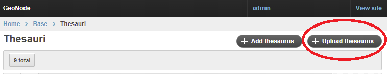
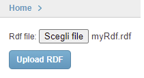
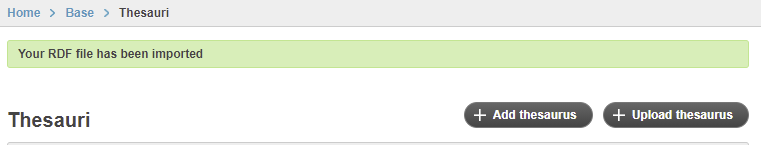
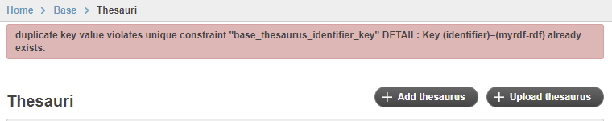
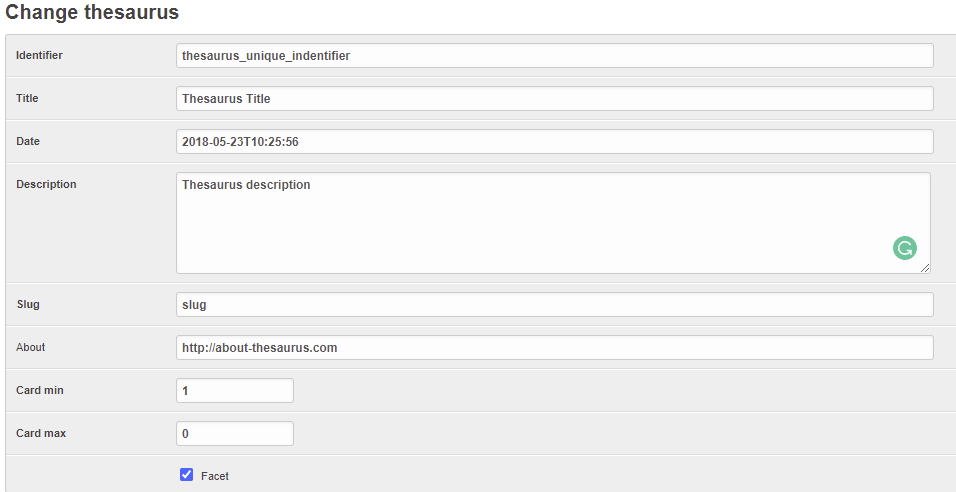
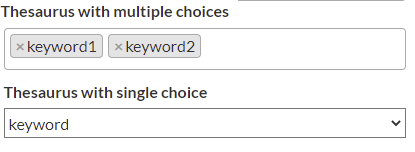
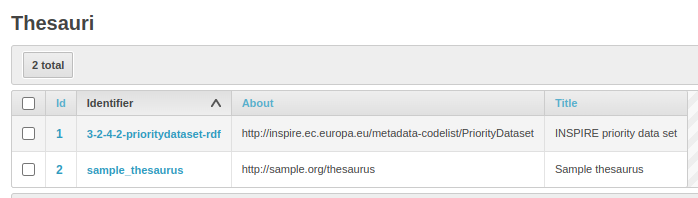
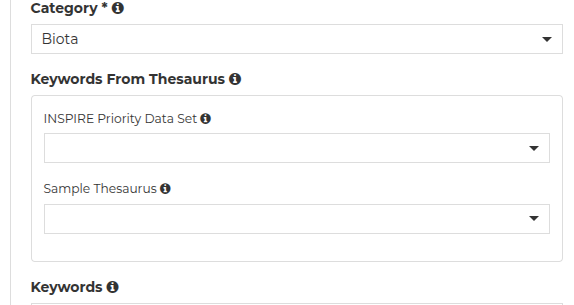
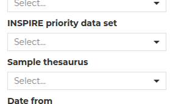

Thesauri¶
Introduction¶
A thesaurus is a structured vocabulary used to manage and standardize keywords (also known as tags) that describe resources. It helps improve metadata quality, searchability, and interoperability by enforcing controlled vocabularies.
Key Functions¶
Controlled Vocabulary Instead of free-text keywords, thesauri offer predefined and standardized terms organized thematically (e.g., ISO 19115 topics, GEMET, INSPIRE themes).
Semantic Consistency
Users tagging datasets can choose from a consistent list of terms, reducing redundancy and ambiguity (e.g., avoiding both "roads" and "road" as separate tags).
Improved search and filtering Thesauri enable structured tagging of datasets, allowing more accurate searches and the use of faceted filters to easily narrow down results.
Localization Each concept in a thesaurus can have translations for different languages, allowing localized display based on the user’s interface language.
Metadata Standards Integration
Thesauri can align with international standards (like ISO, INSPIRE, GEMET), which is especially important when GeoNode is used in institutional or governmental contexts.
Data model¶
The GeoNode thesaurus model is designed to support multilingual, structured vocabularies. It consists of the following key components:
Thesaurus:
* Represents a full controlled vocabulary (e.g., GEMET, INSPIRE themes).
* In SKOS terms, it's a skos:ConceptScheme.
ThesaurusLabel:
* Stores the localized names (titles/descriptions) of a thesaurus for different languages.
* In SKOS terms, it's a skos:preflabel within the skos:ConceptScheme.
ThesaurusKeyword:
* Represents a single concept or term within a thesaurus (e.g., "Land Cover", "Transport"), also storing the default label (used where the translation for a given requested language is not defined) and its identifying URI.
* In SKOS terms, it's a skos:Concept.
ThesaurusKeywordLabel:
* Stores the multilingual labels for each keyword.
* In SKOS terms, it's a skos:preflabel within the skos:Concept.
Adding a Thesaurus¶
A thesaurus can be added in Geonode by:
-
creating a new thesaurus instance within the GeoNode admin pages. As a minumum, you need to:
-
add a thesaurus in admin / base / Thesaurus
- add one or more instances of Keywords in admin / base / ThesaurusKeywords
- uploading a RDF file (either xml, ttl, jsonld or any other format recognized by
RDFlib <https://rdflib.dev/>__). When uploading a file, the behaviour is the same as running the commandthesaurus load --action update(see :ref:load_thesaurus) - loading a RDF file using the
thesaurus loadmanagement command (see :ref:load_thesaurus).
Upload an RDF file via the thesaurus admin page¶
Navigate to the thesaurus page in the admin panel http://<your_geonode_host>/admin/base/thesaurus.
On the top-right of the page a button named :guilabel:Upload thesaurus will be available:

After clicking on it, a simple form for the upload will be shown which will allow you to select your desired RDF file:

By clicking on Upload RDF, the system will load the thesaurus and assign it a "slugified" name based on the file name.
The name can be easily changed later in the edit page.
If everything goes fine, a success message will be shown:

Otherwise the UI will show the error message:

Management commands¶
GeoNode provides a single command (thesaurus) with multiple actions:
list: list existing thesauriload: load a RDF filedump: dump a thesaurus into a file
.. code-block::
python manage.py thesaurus --help
usage: manage.py thesaurus [-h] [-i [IDENTIFIER]] [-f [FILE]] [--action {create,update,append,parse}] [-o [OUT]]
[--include INCLUDE] [--exclude EXCLUDE]
[--format {json-ld,n3,nt,pretty-xml,sorted-xml,trig,ttl,xml}] [--default-lang LANG] [--version]
[-v {0,1,2,3}] [--settings SETTINGS] [--pythonpath PYTHONPATH] [--traceback] [--no-color]
[--force-color] [--skip-checks]
[{list,load,dump}]
Handles thesaurus commands ['list', 'load', 'dump']
positional arguments:
{list,load,dump} thesaurus operation to run
options:
-h, --help show this help message and exit
--version Show program's version number and exit.
-v {0,1,2,3}, --verbosity {0,1,2,3}
Verbosity level; 0=minimal output, 1=normal output, 2=verbose output, 3=very verbose output
--settings SETTINGS The Python path to a settings module, e.g. "myproject.settings.main". If this isn't provided, the
DJANGO_SETTINGS_MODULE environment variable will be used.
--pythonpath PYTHONPATH
A directory to add to the Python path, e.g. "/home/djangoprojects/myproject".
--traceback Raise on CommandError exceptions.
--no-color Don't colorize the command output.
--force-color Force colorization of the command output.
--skip-checks Skip system checks.
Common params:
-i [IDENTIFIER], --identifier [IDENTIFIER]
Thesaurus identifier. Dump: required. Load: optional - if omitted will be created out of the filename
Params for "load" subcommand:
-f [FILE], --file [FILE]
Full path to a thesaurus in RDF format
--action {create,update,append,parse}
Actions to run upon data loading (default: create)
Params for "dump" subcommand:
-o [OUT], --out [OUT]
Full path to the output file to be created
--include INCLUDE Inclusion filter (wildcard is * as suffix or prefix); can be repeated
--exclude EXCLUDE Exclusion filter (wildcard is * as suffix or prefix); can be repeated
--format {json-ld,n3,nt,pretty-xml,sorted-xml,trig,ttl,xml}
Format string supported by rdflib, or sorted-xml (default: sorted-xml)
--default-lang LANG Default language code for untagged string literals (default: None)
List thesauri: thesaurus list¶
Get a list of the thesauri in GeoNode.
Useful to find out the id of the thesauri when you need to export one of them.
Importing a thesaurus: thesaurus load¶
The load command may create an entire Thesaurus, or just update part of it.
Allowed params:
file: file to load; requiredaction:create,update,append,parse; optional, defaultcreate;identifier: the id of the thesaurus; optional, defaults to a name created using the filename.
The automatic identifier creation skips all the chars after the first dot in order to allow a thesaurus partitioning.
For instance we may have different rdf files containing the labels for multiple projects, e.g.: labels-i18n.proj1.rdf, labels-i18n.proj2.rdf... We may simply loop on the filenames and run the load subcommand on each of them, and all the keywords will be added to the same Thesaurus having id labels-i18n.
The load command has different behaviours according to the action parameter:
Actions:
parse: parse the file and loop on all the concepts without writng anything in the db. Is equivalent to the classicdryrunoption;create(default action): tries and create a thesaurus. If the thesaurus already exists, raises an exception.append: creates entries if they do not exist; pk are the ones listed in update action. If the entry already exists, it is not changed in any way.-
update: creates and updates entries:- Thesaurus: creates it if it doesn't exist, pk is "identifier". If it exists updates "date", "description", "title", "about"
- ThesaurusLabel: creates it if it doesn't exist, pk is "thesaurus", "lang" If it exists updates "value"
- ThesaurusKeyword: creates it if it doesn't exist, pk is "thesaurus", "about" If it exists updates "alt_label"
- ThesaurusKeywordlabel: creates it if it doesn't exist, pk is "thesauruskeyword", "lang" If it exists updates "label"
Exporting a thesaurus: thesaurus dump¶
The dump command may export an entire Thesaurus or just a part of it.
Allowed params:
identifier: the id of the thesaurus; required.include: Optional; filter ThesaurusKeywords to be dumped. Can be repeated. Filtering is applied on theaboutfield. Filters are in the format either*stringorstring*exclude: Optional; likeincludebut filter out ThesaurusKeywords from being dumped.format: optional, RDF format for the output (json-ld,n3,nt,pretty-xml,sorted-xml,trig,ttl,xml). Defaultsorted-xmldefault-lang: Default language code for untagged string literals; default is fromsettings.THESAURUS_DEFAULT_LANGout: Full path to the output file to be created. Optional; if omitted the RDF content is sent to stderr.
Format¶
All the formats, except for sorted-xml, use the RDFlib library to serialize the thesaurus data. Since RDFlib handles the concepts as a graph, there is no ordering in the output data. This means that two consecutive dump of the same thesaurus may create two different files.
When importing and exporting thesauri as a file, it may be useful to perform diff on them to find out what has changed.
The format sorted-xml creates a predictable output, where the ConceptScheme is at the start of the file, and the Concepts are sorted by their about field. Furthermore, the prefLabel's are sorted by their lang attribute.
Partial export¶
The dump command also allows to export a subset of the keywords (concepts) in a Thesaurus.
As an example, let's say we have the labels-i18n thesaurus, which contains some GeoNode official labels.
In our project we added some keywords prefixed with "proj1_", since they belong to project1.
Also in our GeoNode instance, we added some labels which override the standard ones, and are postfixed with _ovr.
In order to only export the entries we edited, we'll issue the command::
python manage.py thesaurus dump -i labels-i18n --include "proj1_*" --include "*_ovr" -f labels-i18n.proj1.rdf
Configuring a Thesaurus¶
After a thesaurus is loaded o created in GeoNode, it should be configured in the :guilabel:Admin panel.
The panel can be reached from :guilabel:Admin link of the User Menu in the navigation bar or through this URL: http://<your_geonode_host>/admin/base/thesaurus.
Once you are on the Thesaurus lists, select one thesaurus to open the Edit page

*The GeoNode Thesaurus edit Interface*
These are the thesaurus main attributes:
identifier: (mandatory) the thesaurus identifier (set by the--identifierparameter in thethesaurus loadcommand, or automatically generated using the file name).title: (mandatory) The default title of the thesaurus (may be set from the loaded RDF file).date: (mandatory) The Date of the thesaurus (may be set from the loaded RDF file).description: (mandatory) The description of the thesaurus (may be set from the loaded RDF file).slug: (deprecated, useidentifierinstead) The slug of the thesaurus.about: (optional) Therdf:aboutURI of the thesaurus (may be set from the loaded RDF file).
Next attributes define how the thesaurus shall be used within GeoNode.
card min: (optional) The minimum cardinality, default = 0card max: (optional) The maximum cardinality, default = -1 (no limit)facet: (boolean) Decide if the thesaurus will be shown in the facet list, default: True -- To be set totrueonly whencard_max != 0order: (integer) Set the listing order of the thesaurus in the facet list and in the metadata editor, default: 0, asc order from 0 to N
If card max is not zero, the metadata editor will automatically display the Thesaurus in the list of the controlled terms.
More precisely these are the cases according to the two cardinality fields:
card_max=0--> Disabled, The Thesaurus will not appear in the GUIcard_max=1&card_min = 0--> Single choice, optional.card_max=1&card_min = 1--> Single choice, requiredcard_max=-1&card_min = 0--> [0..N] Multiple choices, optionalcard_max=-1&card_min = 1--> [1..N] Multiple choices, required
The metadata editor will show all the thesauri with card_max != 0, each one with its own title, like in the following image:

*The metadata interface with the Thesaurus enabled*
The Thesauri having card_max == 0 are used as codelists: it means that they will be referred within GeoNode via their identifier for specific purposes. There will be ad-hoc documentation for each of such codelists.
For instance, the thesaurus with identifier labels-i18n is used for the metadata labels translations.
Using keywords from a thesaurus¶
After you've finished the setup you should find a new input widget in the metadata editor allowing you to choose keywords from the thesaurus for your resource.
Also, if you set the facet attribute to true, the thesaurus should be listed in the filter section in GeoNode's resource list views.
For instance, if we have these thesauri:

*List of configured sample thesauri*
both set with card max != 0 and facet = true, we'll have in the editor:

*Keyword selectors for sample thesauri*
and we'll also have them in the filtering panel as facets:

*Facets selectors for sample thesauri*